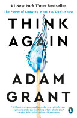

isbn-13: 9781984878106
Hardcover
For some reason it took me quite a long time to read this book, but overall I’m glad I did. I really enjoyed Adam Grant’s Give and Take and I like his style of writing and exposition. He strikes a nice balance between Gladwell’s journalistic narrative style and a more academic style.
One criticism I had of Give and Take was that it was hard to draw convert into actions for change. This book however ends with 30 actionable tips for rethinking.
This book is about how we change ideas and viewpoints: our own, other people’s and those of organizations and communities collectively. The both has three main parts that organized along those lines: Individual Rethinking, Interpersonal Rethinking Collective Rethinking.
Part I. Individual Rethinking
Here Grant introduces the analogy of the ‘Preacher, Prosecutor, Politician and Scientist’ mindsets. Not surprisingly, he advocates the Scientist mindset as the way to change your beliefs as new evidence is uncovered.
As we thìnk and talk, we often slip into the mindsets of three different professions: preachers, prosecutors, and politicians, In each of these modes, we take on a particular identity and use a distinct set of tools. We go into preacher mode when our sacred beliefs are in jeopardy: we deliver sermons to protect and promote our ideals. We enter prosecutor mode when we recognize flaws in other people’s reasoning: we marshal arguments to prove them wrong and win our case. We shift into politician mode when we’re seeking to win over an audience: we campaign and lobby for the approvall of our constituents. The risk is that we become so wrapped up im preaching that we’re right, prosecuting others who are wrong, and politicking for support that we don’t bother to rethink our own views.
But being a scientist is not just a profession. It’s a frame of mind - a mode of thinking that differs from preaching, prosecuting, and politicking. We move into scientist mode when we’re searching for the truth: we run experiments to test hypotheses and discover knowledge. Scientific tools aren’t reserved for people with white coats and beakers, and using them doesn’t require toiling away for years with a microscope and a petri dish. Hypotheses have as much of a place in our lives as they do in the lab. Experiments can inform our daily decisions.
He also explores confidence, humility, impostor syndrome and finding joy in being wrong.
…feeling like an impostor can make us better learners. Having some doubts about our knowledge and skills takes us off a pedestal, encouraging us to seek out insights from others. As psychologist Elizabeth Krumrei Mancuso and her colleagues write, “Learning requires the humility to realize one has something to learn.”
Part II. Interpersonal Rethinking
The big takeaway for me in this part was the chapter on Motivational Interviewing.
When we’re trying to persuade people, we frequently take an adversarial approach. Instead of opening their minds, we effectively shut them down or rile them up. They play defense by putting up a shield, play offense by preaching their perspectives and prosecuting ours, or play politics by telling us what we want to hear without changing what they actually think.
Motivational interviewing starts with an attitude of humility and curiosity. We don’t know what might motivate someone else to change, but we’re genuinely eager to find out. The goal isn’t to tell people what to do; it’s to help them break out of overconfidence cycles and see new possibilities. Our role is to hold up a mirror so they can see themselves more clearly, and then empower them to examine their beliefs and behaviors. That can activate a rethinking cycle, in which people approach their own views more scientifically. They develop more humility about their knowledge, doubt in their convictions, and curiosity about alternative points of view.
The process of motivational interviewing involves three key techniques: - Asking open-ended questions - Engaging in reflective listening - Affirming the person’s desire and ability to change
When people ignore advice, it isn’t always because they disagree with it. Sometimes they’re resisting the sense of pressure and the feeling that someone else is controlling their decision.
Psychologists have found that when people detect an attempt at influence, they have sophisticated defense mechanisms. The moment people feel that we’re trying to persuade them, our behavior takes on a different meaning. A straightforward question is seen as a political tactic, a reflective listening statement comes across as a prosecutor’s maneuvering, an affirmation of their ability to change sounds like a preacher’s proselytizing.
Part III. Collective Rethinking
Here Grant discusses ways of depolarizing discussions, teaching students to question knowledge and building cultures of learning at work.
Actions for impact
Top 30 practical takeaways
I. Individual rethinking
A. Develop The Habit of Thinking Again
- Think like a scientist.
- Define your identity in terms of values, not opinions
- See out information that goes against your own views.
B. Calibrate Your Confidence
- Beware of getting stranded at the summit of Mount Stupid - don’t confuse confidence with competence.
- Harness the benefits of doubt.
- Embrace the joy of being wrong.
C. Invite Others to Question Your Thinking
- Learn something new from each person you meet.
- Build a challenge network, not a support network.
- Don’t shy away from constructive conflict.
II. Interpersonal Rethinking
A. Ask Better Questions
- Practice the art of persuasive listening - increase your question to statement ratio.
- Question how rather than why
- Ask “What eveidence would change your mind”
- Ask how people originally formed an opinion.
B. Approach Disagreements as Dances, Not Battles
- Acknowledge common ground.
- Remember that less is often more.
- Reinforce freedom of choice.
- Have a conversation about the conversation.
III. Collective Rethinking
A. Have More Nuanced Conversations
- Complexify contentious topics - look at polarizing issues through the many lenses of a prism.
- Don’t shy away from caveats and contingencies.
- Expand your emotional range.
B. Teach Kids to Think Again
- Have a weekly myth-busting discussion at dinner.
- Invite kids to do multiple drafts and seek feedback from others.
- Stop asking kids what they want to be when they grow up.
C. Create Learning Organizations
- Abandon best practices - continually strive for better practices.
- Establish psychological safety.
- Keep a rethinking scorecard.
D. Stay Open to Rethinking Your Future
- Throw out the ten-year plan.
- Rethink your actions, not just your surroundings.
- Schedule a life checkup.
- Make time to think again.
Publisher’s Description: “#1 New York Times Bestseller “THIS. This is the right book for right now. Yes, learning requires focus. But, unlearning and relearning requires much more—it requires choosing courage over comfort. In Think Again, Adam Grant weaves together research and storytelling to help us build the intellectual and emotional muscle we need to stay curious enough about the world to actually change it. I’ve never felt so hopeful about what I don’t know.” —Brené Brown, Ph.D., #1 New York Times bestselling author of Dare to Lead The bestselling author of Give and Take and Originals examines the critical art of rethinking: learning to question your opinions and open other people’s minds, which can position you for excellence at work and wisdom in life Intelligence is usually seen as the ability to think and learn, but in a rapidly changing world, there’s another set of cognitive skills that might matter more: the ability to rethink and unlearn. In our daily lives, too many of us favor the comfort of conviction over the discomfort of doubt. We listen to opinions that make us feel good, instead of ideas that make us think hard. We see disagreement as a threat to our egos, rather than an opportunity to learn. We surround ourselves with people who agree with our conclusions, when we should be gravitating toward those who challenge our thought process. The result is that our beliefs get brittle long before our bones. We think too much like preachers defending our sacred beliefs, prosecutors proving the other side wrong, and politicians campaigning for approval–and too little like scientists searching for truth. Intelligence is no cure, and it can even be a curse: being good at thinking can make us worse at rethinking. The brighter we are, the blinder to our own limitations we can become. Organizational psychologist Adam Grant is an expert on opening other people’s minds–and our own. As Wharton’s top-rated professor and the bestselling author of Originals and Give and Take, he makes it one of his guiding principles to argue like he’s right but listen like he’s wrong. With bold ideas and rigorous evidence, he investigates how we can embrace the joy of being wrong, bring nuance to charged conversations, and build schools, workplaces, and communities of lifelong learners. You’ll learn how an international debate champion wins arguments, a Black musician persuades white supremacists to abandon hate, a vaccine whisperer convinces concerned parents to immunize their children, and Adam has coaxed Yankees fans to root for the Red Sox. Think Again reveals that we don’t have to believe everything we think or internalize everything we feel. It’s an invitation to let go of views that are no longer serving us well and prize mental flexibility over foolish consistency. If knowledge is power, knowing what we don’t know is wisdom.”